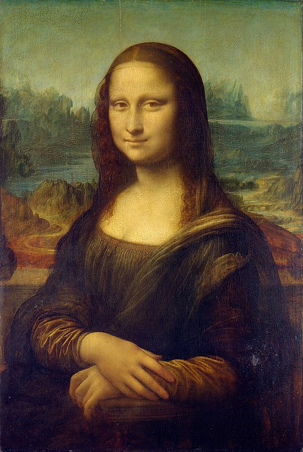
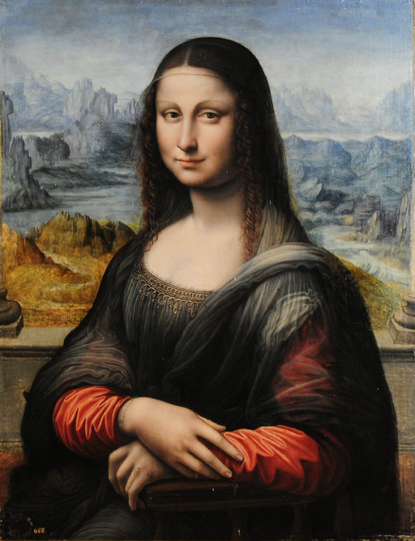

<head>
<meta charset="UTF-8" />
<meta name="keywords" content="drawing, painting" />
<meta name="description" content="drawings by Sunjy" />
<title>Sunjy</title>
<link rel="shortcut icon" type="image/x-icon" href="../../mImages/mCommon/favicon.ico" media="screen" />
<link rel="stylesheet" type="text/css" href="../../mCsses/mCommon/mCssA.css" />
<link rel="stylesheet" type="text/css" href="../../mCsses/mCommon/mCssB.css" />
<link rel="stylesheet" type="text/css" href="../../mCsses/mCommon/mCssC.css" />
<link rel="stylesheet" type="text/css" href="../../mCsses/mCommon/mCssD.css" />
<link rel="stylesheet" type="text/css" href="../../mCsses/mContent/mCssA.css" />
<link rel="stylesheet" type="text/css" href="../../mCsses/mContent/mCssB.css" />
<link rel="stylesheet" type="text/css" href="../../mCsses/mContent/mCssC.css" />
<link rel="stylesheet" type="text/css" href="../../mCsses/mContent/mCssD.css" />
</head>
<script type="text/javascript" src="../../mScripts/mContent/mContentAA.js" /></script>
<script type="text/javascript" src="../../mScripts/mContent/mContentAB.js" /></script>
<script type="text/javascript" src="../../mScripts/mContent/mContentAC.js" /></script>
<script type="text/javascript" src="../../mScripts/mContent/mContentAD.js" /></script>
<script type="text/javascript"></script> 
<script type="text/javascript">
document.write('<div class="mImgAbsolute"></div>');
/*
document.write('<p class="mFontSizeBColor" />From a white paper...</p>');
document.write('<table class="center"><tr><td>');
document.write('');
document.write('</td></tr></table>');
*/
</script>


<script type="text/javascript">
document.write('<p class="mFontSizeBColor" />The Mona Lisa</p>');
document.write('<p class="mFontSizeSColor" />The “Mona Lisa” by Leonardo da Vinci is a portrait which he started in Florence around 1503. It is thought to be of Lisa Gherardini, wife of a Florentine cloth merchant.<br><br>Leonardo took this painting with him to France when he joined the court of the French King, and after his death, the picture entered King François I’s collection.<br><br>The Mona Lisa then became part of The Louvre collection in 1797 and is considered to be one of the world’s best-known paintings, the most written about and the most parodied works of art in the world.<br><br>In 1911, Leonardo’s Mona Lisa painting was stolen from the Louvre, and the Louvre closed for an entire week during the investigations.  The theft created a media sensation, and rewards were offered.<br><br>Pablo Picasso was on the original list of suspects questioned and jailed for the robbery, but he was later released. After many false leads and claims, the Mona Lisa thief was caught when he attempted to sell it to the Uffizi Gallery in Florence.<br><br>“The Mona Lisa” was returned to the Louvre in 1914, and the thief, a Louvre employee Vincenzo Peruggia only served six months in prison for the crime.<br><br>Peruggia was hailed for his patriotism in Italy as he claimed that he wanted to return the Mona Lisa to the country that gave birth to the Mona Lisa and Leonardo. Perugia believed that the Mona Lisa had been stolen from Florence by Napoleon.<br><br>He felt that he deserved a reward for doing his patriotic duty and returning it to its real home in Italy.<br><br>Before the 1911 theft, the Mona Lisa was not widely known outside the art world. The nearly two-year hunt across multiple continents helped to publicize the Mona Lisa and increase awareness of this masterpiece in the public imagination.<br><br>In 1956, the painting was damaged when a vandal threw acid at it, which provided more publicity and notoriety. That same year, a rock was thrown at the canvas, which left some minor damage.<br><br>The bulletproof glass was then installed to protect the Mona Lisa. This protection was fortunate when, in 1974, a woman, upset by the museum’s policy for disabled people, sprayed red paint at the Mona Lisa.<br><br>More recently, in 2009, a Russian woman, upset for being denied French citizenship, threw a ceramic teacup at the famous painting.<br><br>The painting has been exhibited in New York City, Washington, D.C., Tokyo, and Moscow with great success. Before the U.S. tour, in 1962, the picture was assessed for insurance at $100 million.<br><br>In today’s terms, that translates to about $800m, considered to be the most valued painting in the world.<br><br>In art terms, the Mona Lisa is the earliest Italian portrait to focus firmly on the sitter in a half-length portrait and set the standard for future artists.<br><br>Depicting the subject in front of an imaginary landscape, Leonardo was one of the first painters to use perspective in this way. Da Vinci pioneered a shadowing technique at the corners of her lips and the corners of her eyes, which give her a remarkably lifelike appearance and look of amusement.<br><br>An unexpected historical copy of the Mona Lisa was discovered in 2012 as part of the Prado collection in Madrid. When the painting was cleaned, scientific analysis revealed that another artist probably painted the reproduction.<br><br>Possibly an apprentice of Leonardo da Vinci, who sat beside Leonardo and copied his work, brush-stroke by brush-stroke.</p>');
document.write('<table class="center" /><tr><td>');
document.write('<br>Leonardo took this painting with him to France when he joined the court of the French King, and after his death, the picture entered King François I’s collection.<br><br>The Mona Lisa then became part of The Louvre collection in 1797 and is considered to be one of the world’s best-known paintings, the most written about and the most parodied works of art in the world.<br><br>In 1911, Leonardo’s Mona Lisa painting was stolen from the Louvre, and the Louvre closed for an entire week during the investigations.  The theft created a media sensation, and rewards were offered.<br><br>Pablo Picasso was on the original list of suspects questioned and jailed for the robbery, but he was later released. After many false leads and claims, the Mona Lisa thief was caught when he attempted to sell it to the Uffizi Gallery in Florence.<br><br>“The Mona Lisa” was returned to the Louvre in 1914, and the thief, a Louvre employee Vincenzo Peruggia only served six months in prison for the crime.<br><br>Peruggia was hailed for his patriotism in Italy as he claimed that he wanted to return the Mona Lisa to the country that gave birth to the Mona Lisa and Leonardo. Perugia believed that the Mona Lisa had been stolen from Florence by Napoleon.<br><br>He felt that he deserved a reward for doing his patriotic duty and returning it to its real home in Italy.<br><br>Before the 1911 theft, the Mona Lisa was not widely known outside the art world. The nearly two-year hunt across multiple continents helped to publicize the Mona Lisa and increase awareness of this masterpiece in the public imagination.<br><br>In 1956, the painting was damaged when a vandal threw acid at it, which provided more publicity and notoriety. That same year, a rock was thrown at the canvas, which left some minor damage.<br><br>The bulletproof glass was then installed to protect the Mona Lisa. This protection was fortunate when, in 1974, a woman, upset by the museum’s policy for disabled people, sprayed red paint at the Mona Lisa.<br><br>More recently, in 2009, a Russian woman, upset for being denied French citizenship, threw a ceramic teacup at the famous painting.<br><br>The painting has been exhibited in New York City, Washington, D.C., Tokyo, and Moscow with great success. Before the U.S. tour, in 1962, the picture was assessed for insurance at $100 million.<br><br>In today’s terms, that translates to about $800m, considered to be the most valued painting in the world.<br><br>In art terms, the Mona Lisa is the earliest Italian portrait to focus firmly on the sitter in a half-length portrait and set the standard for future artists.<br><br>Depicting the subject in front of an imaginary landscape, Leonardo was one of the first painters to use perspective in this way. Da Vinci pioneered a shadowing technique at the corners of her lips and the corners of her eyes, which give her a remarkably lifelike appearance and look of amusement.<br><br>An unexpected historical copy of the Mona Lisa was discovered in 2012 as part of the Prado collection in Madrid. When the painting was cleaned, scientific analysis revealed that another artist probably painted the reproduction.<br><br>Possibly an apprentice of Leonardo da Vinci, who sat beside Leonardo and copied his work, brush-stroke by brush-stroke." />');
document.write('</td></tr></table>');
document.write('<p class="mFontSizeBColor" />A copy of the Mona Lisa. Discovered in 2012 as part of the Prado collection in Madrid.</p>');
document.write('<p class="mFontSizeSColor" />The Prado painting suggests what the Mona Lisa might look like if layers of yellowed varnish could be removed from the original. The face, especially the smile, does look slightly different, but it is a close copy in many other respects and dates to a similar time. <br><br>The painting cannot be considered as a workshop copy. It has careful and thorough execution, as well as its use of expensive materials such as lapis lazuli or red lacquer, which were used by Leonardo.<br></p>');
document.write('<table class="center" /><tr><td>');
document.write('<br>The painting cannot be considered as a workshop copy. It has careful and thorough execution, as well as its use of expensive materials such as lapis lazuli or red lacquer, which were used by Leonardo.<br>" />');
document.write('</td></tr></table>');
</script>


